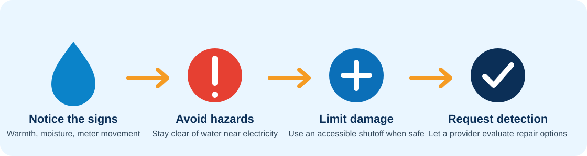

Warm or damp flooring
A hot-water line leak may create an unusual warm area. Damp carpet, lifting flooring, or discoloration can indicate moisture.
Possible under-slab plumbing leak
Warm flooring, unexplained water use, damp areas, low pressure, or running-water sounds can point to a concealed pipe leak beneath a slab. Request local plumbing help to narrow down the source and discuss appropriate repair options.
This site collects plumbing requests and seeks available connection options. Diagnosis, availability, timing, pricing, licensing, and completed service must be confirmed directly with the provider.
Warning signs
No single symptom proves there is a slab leak. A plumbing provider may need to compare several observations and inspect the plumbing before recommending repair work.
A hot-water line leak may create an unusual warm area. Damp carpet, lifting flooring, or discoloration can indicate moisture.
A higher bill or a meter that moves while fixtures and irrigation are off can indicate an unaccounted-for flow.
Hissing or flowing sounds when no fixture is operating may help identify a concealed leak.
Low pressure, wet soil beside the slab, odors, or new interior damage deserve investigation, although each can have other causes.
Safe first response

Do not enter standing water near outlets, panels, appliances, or extension cords.
For uncontrolled flow, use an accessible shutoff only if you can reach and operate it safely. Do not force a seized valve.
When it is safe, move items away from damp flooring and photograph visible changes for your records.
The suspected location should be narrowed before concrete, flooring, or walls are disturbed.
Detection and repair
The provider may review meter behavior, visible moisture, pressure changes, the hot- and cold-water system, and the likely path of the affected line. The appropriate testing method depends on the property and symptoms.
Once the source and location are better understood, the provider can explain whether a localized repair, rerouting a line, replacing a larger pipe section, or another approach fits the situation. Not every slab-leak repair requires opening the same area, and the website cannot diagnose which method is appropriate.
Pricing factors
Price can change with leak location, detection time, pipe material and condition, access, flooring or concrete work, the chosen repair approach, restoration needs, permits, and after-hours availability.
Ask the responding provider what is included in the estimate and confirm licensing, insurance, timing, warranties, and responsibility for flooring or concrete restoration before authorizing work.
Possible slab leak in Hemet?
Share where the problem appears and whether water is actively spreading.
Questions
No. A warm area is only one clue. Heating, sunlight, appliances, and other conditions can affect floor temperature. A plumbing provider must evaluate the cause.
For water that is actively and uncontrollably spreading, shutting off the main may limit damage. Use it only if the area and valve are safely accessible, and do not force a stuck valve.
That depends on the confirmed leak location, pipe condition, access, and repair approach. Ask the provider to explain the recommended method and restoration responsibilities.
No. The responding provider must inspect the situation and confirm diagnosis, availability, pricing, licensing, and service details directly with you.
Prefer not to call?
Send the basic details so the request can be reviewed and shared with an available provider.
For active flooding near electricity, a gas smell, fire, or immediate danger, contact emergency services or the appropriate utility first.